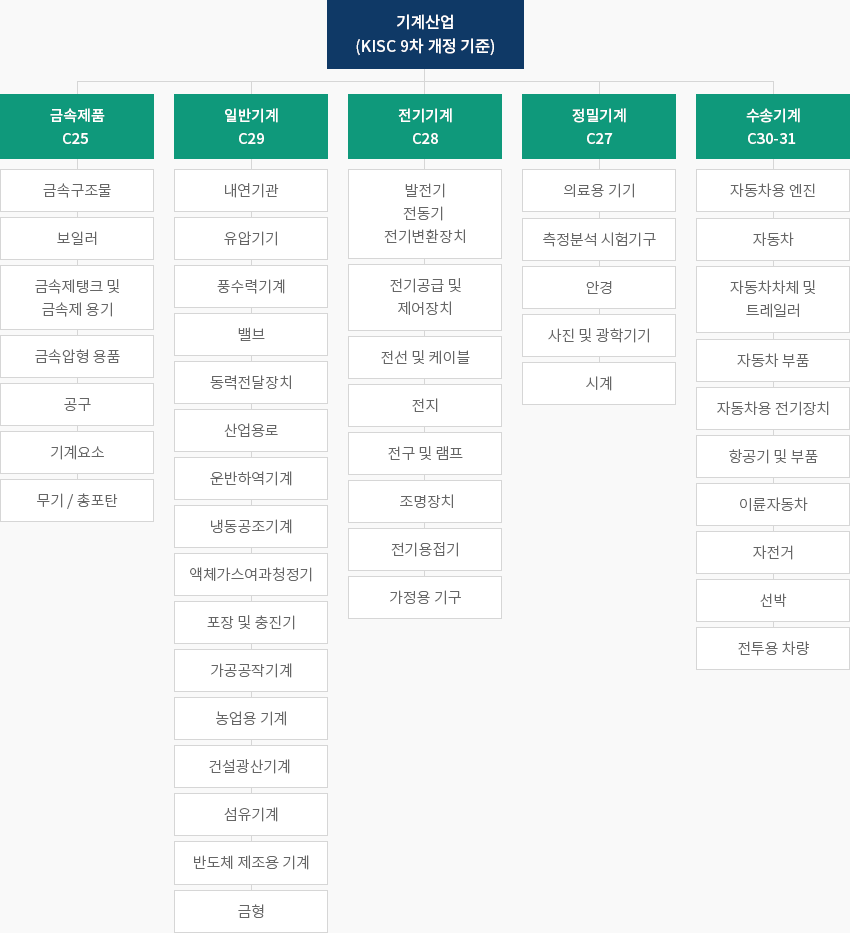
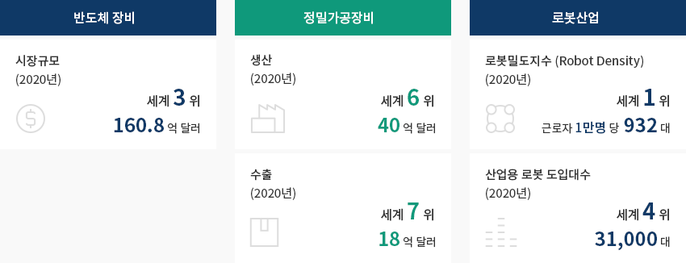
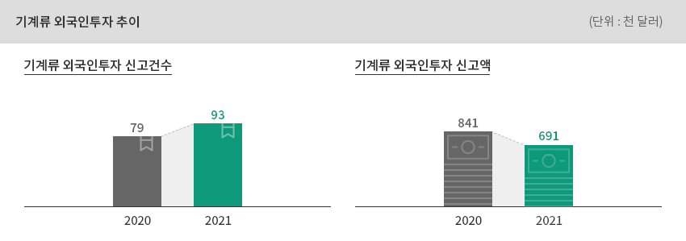
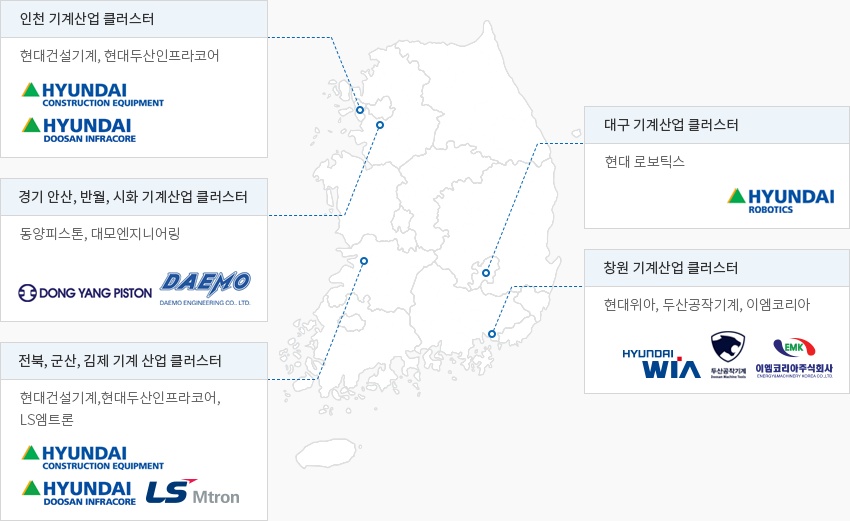

기계
- Home
- Why KOREA
- 산업
- 기계
기계
Machinery
-
기계산업의 정의 내용닫기기계산업의 정의한국표준산업분류에 의거한 기계산업은 일반기계, 전기기계, 정밀기계,
수송기계, 금속 제품(조립금속)의 5대 업종을 모두 포함"한국표준산업분류에 의거한 5대 기계산업 분류"기계산업(KISC 9차 개정 기준)-
금속제품 C25
- 금속구조물
- 보일러
- 금속제탱크 및 금속제 용기
- 금속압형 용품
- 공구
- 기계요소
- 무기 / 총포탄
-
일반기계 C29
- 내연기관
- 유압기기
- 풍수력기계
- 밸브
- 동력전달장치
- 산업용로
- 운반하역기계
- 냉동공조기계
- 액체가스여과청정기
- 포장 및 충진기
- 가공공작기계
- 농업용 기계
- 건설광산기계
- 섬유기계
- 반도체 제조용 기계
- 금형
-
전기기계 C28
- 발전기, 전동기, 전기변환장치
- 전기공급 및 제어장치
- 전선 및 케이블
- 전지
- 전구 및 램프
- 조명장치
- 전기용접기
- 가정용 기구
-
정밀기계 C27
- 의료용 기기
- 측정분석 시험기구
- 안경
- 사진 및 광학기기
- 시계
-
수송기계 C30-31
- 자동차용 엔진
- 자동차
- 자동차차체 및 트레일러
- 자동차 부품
- 자동차용 전기장치
- 항공기 및 부품
- 이륜자동차
- 자전거
- 선박
- 전투용 차량
 ※ 출처 : 통계청
※ 출처 : 통계청 -
금속제품 C25
-
전후방연관 산업 생태계 기반 글로벌 경쟁력 강화 내용열기전후방연관 산업 생태계 기반 글로벌 경쟁력 강화한국은 기계산업의 가격경쟁력을 유지하고 있고, 자동차, 항공, 조선, 반도체·디스플레이 등
전후방연관 산업생태계가 발달되어 있다.한국은 2020년 기준 반도체장비 시장 규모 160.8억 달러로 세계 3위, 정밀가공장비 생산 40억 달러로
세계 6위, 수출 18억 달러를 기록하여 세계 7위로 그 수준이 높은 편이며, 추후 한국 주력산업의
스마트공장보급 확산을 토대로 제조시스템공급 역량이 더욱 강화될 것으로 전망된다.
※ 정밀가공장비 : 공작기계산업(Machine Tool Industry)을 의미하며,
다양한 제조방법 중에서 절삭가공과 소성가공에 이용되는 모든 기계를 포함한다.또한 한국의 로봇밀도지수(근로자1만명 당 로봇 도입 대수)는 2020년 기준 세계에서 첫 번째로 높고,
세계에서 네 번째로 많은 산업용 로봇을 도입하고 있다."한국 주요 기계산업의 위상"- 반도체 장비: 시장규모 (2020년) 세계 3위 160.8억 달러
- 정밀가공장비: 생산 (2020년) 세계 6위 40억 달러, 수출(2020년) 세계 7위 18억 달러
- 로봇산업: 로봇밀도지수 (Robot Density) (2020년) 세계 1위 근로자 1만명 당 932대, 산업용 로봇 도입대수(2020년) 세계 4위 31,000대
※ 출처 : 국제반도체장비재료협회(2021.4), Gardner, 한국공작기계산업협회, 국제로봇연맹(IFR) -
한국 핵심산업으로 수출 기반 성장 전망 내용열기한국 핵심산업으로 수출 기반 성장 전망한국 기계산업은 생산액 기준으로 한국 제조업에서 6위, 사업체수 1위, 종사자수 3위, 부가가치 4위에 위치한 핵심산업이다.최근 5년(2015~2020) 연평균 수출 증가율은 1.4%이며, 무역수지의 연평균 증가율은 –0.8%이다.
특히 동기간 반도체장비의 연평균 수출 증가율은 13.1%를 기록하였다."한국 제조업 內 기계산업"(기준 : 2019년)한국 제조업 內 기계산업 표로 KISC중분류, 생산액, 사업체수, 종사자수, 부가가치 정보제공 KISC중분류 생산액 사업체수 종사자수 부가가치 Code 항목명 조원 비중 순위 개사 비중 순위 천명 비중 순위 조원 비중 순위 C 제조업 (10~33) 1,552 100.0 - 69,639 100.0 - 2,928 100.0 - 557 100.0 - 29 기타 기계 및 장비 제조업 123 3.8 6 9,835 14.1 1 335 11.4 3 45 8.0 4 ※ 출처 : 통계청, 광업ㆍ제조업조사보고서, 종사자수 10인 이상 사업체 기준※ 출처 : 통계청 “광업제조업동향조사” 및 “광업제조업조사“, 관세청 “무역통계＂ -
일반기계, 공작기계 중심의 對韓 투자 흐름 내용열기일반기계, 공작기계 중심의 對韓 투자 흐름기계류 외국인 투자는 일반기계, 공작기계를 중심으로 이뤄지고 있으며, 2019년 전년대비 감소세를 보였다.대표적인 사례는 볼보그룹 코리아로, 1998년 삼성중공업의 건설기계 사업부문을 인수하며
한국에 진출한 이후 볼보그룹 코리아 건설기계 사업부문은 볼보그룹 굴삭기 비즈니스의 글로벌 생산기지로서
총 생산량의 80% 이상을 유럽, 북미, 아시아 등 전 세계에 수출하고 있다.2019년 세계적인 반도체장비업체인 미국 램리서치가 연구개발(R&D)센터를 한국으로 완전 이전하기로
결정하여 국내 소재・부품・장비업체와의 협업 및 공동개발을 적극 추진할 것으로 기대된다.2021년 세계에서 유일하게 10나노미터 이하 웨이퍼 생산공정에 필요한 극자외선(EUV)노광장비를 공급하는
네덜란드 ASML은 경기도 화성에 엔지니어를 위한 트레이닝센터와 재제조센터 투자 계획을 발표하였는데,
이는 K-반도체 벨트 조성계획에서 핵심 축을 맡고 있는 첨단장비 분야이다. ※ 출처 : 외국인투자통계
※ 출처 : 외국인투자통계 -
로봇 산업 기술력 향상을 위한 정부 정책 추진 내용열기로봇 산업 기술력 향상을 위한 정부 정책 추진2021년 2월에 발표된 한국 정부의 “소재부품장비 특화단지 지정”을 통하여 경남지역은
정밀기계 분야 특화단지로 지정되어 기계산업의 글로벌 공급망이 강화될 것으로 기대된다.2021년 4월 발표된 한국 정부의 “2021년 지능형로봇 실행계획”에 따라 사람과 협업하는 로봇 확산으로
사회적 요구(인구 감소, 삶의 질 개선 등)에 대응하고, 로봇을 활용한 전산업의 비대면화・디지털 전환
가속화 견인, 선제적 제도 개선 및 실증기반 확충을 통한 로봇 활용 환경을 조성할 것으로 기대된다.
또한 2020년 4월 발표된 한국 정부의 “소재·부품·장비 산업 경쟁력 강화를 위한 특별조치법의 시행(2020.4.1)”에
따라 제조장비 산업은 주목받고 있으며, 이와 더불어 한국정부의 산업용 로봇 육성 의지가 강해 기계산업에
활기를 불어넣을 것으로 기대한다.한국 정부는 2019년 8월 ‘제3차 지능형 로봇 기본계획(2019~2023)“을 마련하였으며, 개발된 로봇의
시험ㆍ인증, 실증, 기업지원을 위한 7대 거점을 구축하고, 산학융합촉진법개정을 통해 규제샌드박스제도를 도입하였다.※ 7대 거점 : 로봇인증센터(대구), 안전로봇·수중로봇복합센터(경북), 제조로봇기술센터(경남),
해양로봇센터(부산), 헬스케어로봇센터(광주), 로봇산업화지원센터(대전), 융합부품센터(부천)"2021 신규 주요 기술개발 과제"2021 신규 주요 기술개발 과제 표로 분야, 주요 내용 정보제공 분야 주요 내용 돌봄 감염환자 격리이송을 위한 사람 추종형 반자율 침상 로봇 개발 감염격리변동 내 감호보조 및 환자모니터링 로봇 시스템 개발 격리 치료 시설용 돌봄 로봇 개발 의료 상시 자가 재활이 가능한 경량 착용형 재활 로봇 개발 물류 화물 상차작업을 위한 로봇 기반 상차 시스템 기술개발 한국형 물류창고 운영 효율화를 위한 모바일 물류 핸들링 로봇 기술개발 통합 로봇 활용 서비스 BM구현을 위한 현장 작용형 로봇 시스템 개발 ※ 출처 : 관계부처 합동 2021년 지능형로봇 실행계획 자료(2021.04) -
수도권 및 경남 중심의 기계 클러스터 내용열기수도권 및 경남 중심의 기계 클러스터2019년 기준 한국 기계산업 전체 사업자의 63.8%가 수도권 및 경남에 입지하고 있으며,
특히, 경남 기계산업은 14.3%로 국내 전체 기계산업에서 두 번째로 높은 비중을 차지하고 있다.경남은 창원 국가 산업단지를 중심으로 소재-부품-완제품으로 이어지는 우수한 기계산업 생태계가
조성되어 있으며, 매출액 기준 세계 10위권 내의 공작기계 기업인 두산공작기계와 현대위아 등이 위치해 있다.
세아창원특수강, 한국철강, 한국엔에스케이 등의 소재・부품업체들이 입지하고, 창원 주변에 입지한
수요기업인 기계ㆍ자동차ㆍ항공ㆍ조선 업체에 소재・부품을 공급하고 있다."한국 기계산업 주요 클러스터 분포"- 인천 기계산업 클러스터: 현대건설기계, 현대두산인프라코어
- 경기 안산, 반월, 시화 기계산업 클러스터: 동양피스톤, 대모엔지니어링
- 전북, 군산, 김제 기계산업 클러스터: 현대건설기계, 현대두산인프라코어, LS엠트론
- 대구 기계산업 클러스터: 현대 로보틱스
- 창원 기계산업 클러스터: 현대위아, 두산공작기계, 이엠코리아
※ 작성협조 : 산업연구원


Invest KOREA담당자
기계/로봇/기타제조 PM
이철순
기간산업유치팀
T.+82-2-3460-7724
입지정보 추천
산업단지 정보
[충청북도 진천군] 문백정밀기계산업단지
세부정보 바로가기를 클릭하시면 산업단지공단의 Smart K-Factory 서비스의 해당 정보 화면으로 이동합니다.
-
단지명문백정밀기계산업단지
-
최초지정일2011.03.04
-
지정면적(km2)399,948
-
관리기관충청북도 진천군
-
인근철도역오근장역
-
역과 거리(km)15
-
인근공항청주국제공항
-
공항과의 거리(km)16
-
공업용수 공급용량(톤/일)511(㎥/일)
-
소속 기초 지자체충청북도 진천군
-
인구수(명)81,949
산업단지 정보
[충청남도 당진시] 아산(부곡지구)
세부정보 바로가기를 클릭하시면 산업단지공단의 Smart K-Factory 서비스의 해당 정보 화면으로 이동합니다.
-
단지명아산(부곡지구)
-
최초지정일1979.12.14
-
지정면적(km2)3,118,889
-
관리기관한국산업단지공단
-
인근철도역평택역
-
역과 거리(km)44
-
인근공항청주국제공항
-
공항과의 거리(km)93
-
공업용수 공급용량(톤/일)-
-
소속 기초 지자체충청남도 당진시
-
인구수(명)166,067
산업단지 정보
[전라남도 여수시] 율촌제1일반산업단지(광양만권경제자유구역)
세부정보 바로가기를 클릭하시면 산업단지공단의 Smart K-Factory 서비스의 해당 정보 화면으로 이동합니다.
-
단지명율촌제1일반산업단지(광양만권경제자유구역)
-
최초지정일1992.05.13
-
지정면적(km2)9,106,791
-
관리기관광양만권경제자유구역청
-
인근철도역율촌역
-
역과 거리(km)5
-
인근공항여수공항
-
공항과의 거리(km)5
-
공업용수 공급용량(톤/일)30,937(㎥/일)
-
소속 기초 지자체전라남도 여수시
-
인구수(명)280,603
산업단지 정보
[경기도 안산시] 반월도금일반산업단지
세부정보 바로가기를 클릭하시면 산업단지공단의 Smart K-Factory 서비스의 해당 정보 화면으로 이동합니다.
-
단지명반월도금일반산업단지
-
최초지정일1988.02.16
-
지정면적(km2)162,045
-
관리기관경기도 안산시
-
인근철도역수원역
-
역과 거리(km)13
-
인근공항김포국제공항
-
공항과의 거리(km)40
-
공업용수 공급용량(톤/일)-
-
소속 기초 지자체경기도 안산시
-
인구수(명)653,733
산업단지 정보
[경상남도 창원시] 진북농공단지
세부정보 바로가기를 클릭하시면 산업단지공단의 Smart K-Factory 서비스의 해당 정보 화면으로 이동합니다.
-
단지명진북농공단지
-
최초지정일1989.12.15
-
지정면적(km2)133,170
-
관리기관경상남도 창원시
-
인근철도역마산역
-
역과 거리(km)22
-
인근공항사천공항
-
공항과의 거리(km)51
-
공업용수 공급용량(톤/일)330(㎥/일)
-
소속 기초 지자체경상남도 창원시
-
인구수(명)1,038,677
산업단지 정보
[울산광역시 북구] 중산일반산업단지
세부정보 바로가기를 클릭하시면 산업단지공단의 Smart K-Factory 서비스의 해당 정보 화면으로 이동합니다.
-
단지명중산일반산업단지
-
최초지정일2006.05.11
-
지정면적(km2)128,392
-
관리기관울산광역시
-
인근철도역태화강역
-
역과 거리(km)17
-
인근공항울산공항
-
공항과의 거리(km)10
-
공업용수 공급용량(톤/일)219(㎥/일)
-
소속 기초 지자체울산광역시 북구
-
인구수(명)1,140,310